fudge.covariances package¶
Submodules¶
fudge.covariances.base module¶
Abstract base class for ‘standard’ covariance matrices (not including parameter covariances). All covariance classes need a label, ability to get row/column bounds, ability to convert to simple numeric matrix, etc.
fudge.covariances.covarianceSuite module¶
Module with containers for covariances in several different forms
- class fudge.covariances.covarianceSuite.CovarianceSections[source]¶
Bases:
SuiteMost covariances are stored in ‘sections’, each representing either the internal covariance for a single quantity (i.e. cross section) or the cross-term between two quantities
- legacyMemberNameMapping = {'section': 'covarianceSection'}¶
- moniker = 'covarianceSections'¶
- class fudge.covariances.covarianceSuite.CovarianceSuite(projectile, target, evaluation, interaction=None, formatVersion='2.0', sourcePath=None)[source]¶
Bases:
AncestryIOAll covariances for a target/projectile combination are stored in a
CovarianceSuitein gnds. TheCovarianceSuiteis stored in a separate file from the reactionSuite.Within the
CovarianceSuite, data is sorted intosections(see the section module), each of which contains one section of the full covariance matrix.- ancestryMembers = ('externalFiles', 'styles', 'covarianceSections', 'parameterCovariances')¶
- check(**kwargs)[source]¶
Check all covariance sections, returning a list of warnings.
- Parameters:
checkUncLimits (bool) – Should we check the uncertainty limits? (default: True)
minRelUnc (float) – Minimum allowable relative uncertainty (default: 0.0)
maxRelUnc (float) – Maximum allowable relative uncertainty (default: 10.0)
theData – A reference to the data for this covariance. This is useful for converting between relative and absolute covariance (default: None)
negativeEigenTolerance (float) – Ignore negative eigenvalues smaller than this (default: -1e-6)
eigenvalueRatioTolerance (float) – Warn if smallest eigenvalue < this value * biggest (default: 1e-8)
eigenvalueAbsoluteTolerance (float) – Warn if smallest eigenvalue < this value (default: 1e-14)
verbose (bool) – Be verbose while running checks
- Return type:
- childNodeOrder = {'1.10': ('externalFiles', 'styles', 'covarianceSections', 'parameterCovariances'), '2.0': ('externalFiles', 'styles', 'covarianceSections', 'parameterCovariances'), '2.0.LLNL_4': ('externalFiles', 'styles', 'covarianceSections', 'parameterCovariances')}¶
- convertUnits(unitMap)[source]¶
unitMap is a dictionary with old/new unit pairs where the old unit is the key (e.g., { ‘eV’ : ‘MeV’, ‘b’ : ‘mb’ }).
- property covarianceSections¶
- property domainMax¶
Returns the maximum of the projectile energy for the evaluation. This needs to be fixed to handle multiple evaulation styles.
- property domainMin¶
Returns the minimum of the projectile energy for the evaluation. This needs to be fixed to handle multiple evaulation styles.
- property domainUnit¶
Returns the unit of the projectile energy for the evaluation. This needs to be fixed to handle multiple evaulation styles.
- property externalFiles¶
- fix(**kwargs)[source]¶
Apply basic fixes to a covariance
- Parameters:
removeNegativeEVs (bool) – Should we remove eigenspaces corresponding to negative eigenvalues? (Default: True)
removeSmallEVs (bool) – Should we remove eigenspaces corresponding to small eigenvalues? (Default: False)
fixUncLimits (bool) – Should we fix the uncertainties to lie within bounds imposed by minRelUnc and maxRelUnc? (Default: False)
minRelUnc (float or None) – Minimum allowable uncertainty for this covariance
maxRelUnc (float or None) – Maximum allowable uncertainty for this covariance
theData (instance or None) – Reference to the data that accompanies this covariance so that we may convert between absolute and relative covariance as needed.
- property interaction¶
Returns self’s interaction.
- moniker = 'covarianceSuite'¶
- property parameterCovariances¶
- parseCleanup(node, **kwargs)[source]¶
This method does nothing. A place holder incase the derived class needs one.
- classmethod parseNodeUsingClass(element, xPath, linkData, **kwargs)[source]¶
This method must be overrwritten by the derived class.
- projectile¶
The projectile
- static read(fileName, **kwargs)[source]¶
Reads in the file name fileName and returns a ReactionSuite instance.
- removeExtraZeros()[source]¶
Checks all covariance matrices for rows/columns of all zero, removes them if found.
- property sourcePath¶
Returns the sourcePath member which is the path to the covarianceSuite file for self if self is from a file.
- property styles¶
- target¶
The target
fudge.covariances.distributions module¶
- class fudge.covariances.distributions.LegendreLValue(L1, L2, frame)[source]¶
Bases:
SuiteRepresents one subsection of the Legendre coefficient covariance matrix: covariance between coefficients for two Legendre orders at various energies
- L1¶
- L2¶
- frame¶
- moniker = 'LegendreLValue'¶
- class fudge.covariances.distributions.LegendreOrderCovarianceForm(label=None, lvalues=None)[source]¶
Bases:
AncestryIOStores covariance between energy-dependent Legendre coefficients for a reaction. This class contains one or more LegendreLValue sections, each section containing the matrix between a pair of L-values
- property label¶
- lvalues¶
the l values of course
- moniker = 'LegendreOrderCovariance'¶
fudge.covariances.mixed module¶
- class fudge.covariances.mixed.MixedForm(label=None, components=None)[source]¶
Bases:
AncestryIO,CovarianceCovariance for a single quantity, stored as several separate matrices that must be summed together. In general, the energy bounds for these matrices can overlap (unlike Regions1d cross section data).
- addComponent(covariance)[source]¶
- Parameters:
covariance – an instance of covariance (or inherited class)
- columnBounds(unit=None)[source]¶
Get the bounds of the column. If unit is specified, return the bounds in that unit. Otherwise, take unit from the first sub-matrix.
- components¶
a Python list containing instances of
mixedForm,summedCovariance, andcovarianceMatrix
- property domainUnit¶
- getMatchingComponent(rowBounds=None, columnBounds=None)[source]¶
- Parameters:
rowBounds –
columnBounds –
- Returns:
- getUncertaintyVector(theData=None, relative=True)[source]¶
Combines all subsections into single uncertainty vector, converting to relative if requested.
- Returns:
an XYs1d instance
- keyName = 'label'¶
- property label¶
- makeSafeBounds()[source]¶
Go through all the components and make sure the bounds don’t overlap. If they do, it is likely a bug.
- moniker = 'mixed'¶
- classmethod parseNodeUsingClass(element, xPath, linkData, **kwargs)[source]¶
Translate <mixed> element from xml.
- rowBounds(unit=None)[source]¶
Get the bounds of the row. If unit is specified, return the bounds in that unit. Otherwise, take unit from first sub-matrix.
- toAbsolute(rowData=None, colData=None)[source]¶
Rescales self (if it is a relative covariance) using XYs1d rowData and columnData to convert self into an absolute covariance matrix.
- Parameters:
rowData – an XYs1d instance containing data to rescale covariance in the “row direction”
colData – an XYs1d instance containing data to rescale covariance in the “column direction”
Note
If the column axis is set to ‘mirrorOtherAxis’, only rowData is needed.
- Returns:
a copy of self, but rescaled and with the type set to absolute
- toRelative(rowData=None, colData=None)[source]¶
Rescales self (if it is a absolute covariance) using XYs1d rowData and columnData to convert self into a relative covariance matrix.
- Parameters:
rowData – an XYs1d instance containing data to rescale covariance in the “row direction”
colData – an XYs1d instance containing data to rescale covariance in the “column direction”
Note
If the column axis is a link to row axis, only rowData is needed.
- Returns:
a copy of self, but rescaled and with the type set to relative
fudge.covariances.modelParameters module¶
- class fudge.covariances.modelParameters.AverageParameterCovariance(label, rowData=None, columnData=None)[source]¶
Bases:
CovarianceSectionFor storing unresolved resonance parameter covariances. Very similar to covariances for cross section, nubar, etc.: they require an energy grid + matrix.
Each average parameter (e.g. elastic width, capture width, etc.) has its own averageParameterCovariance section.
- moniker = 'averageParameterCovariance'¶
- class fudge.covariances.modelParameters.ParameterCovariance(label, rowData=None, columnData=None)[source]¶
Bases:
SuiteFor storing unresolved resonance parameter covariances. Very similar to covariances for cross section, nubar, etc.: they require an energy grid + matrix.
Each average parameter (e.g. elastic width, capture width, etc.) has its own averageParameterCovariance section.
- property crossTerm¶
- property evaluated¶
Helper method to grab evaluated style FIXME method should be inherited, but abstractClasses.Component defines methods that don’t make sense for covariances
- keyName = 'label'¶
- moniker = 'parameterCovariance'¶
- class fudge.covariances.modelParameters.ParameterCovarianceMatrix(label, matrix, parameters_=None, type=Type.relative)[source]¶
Bases:
FormStore covariances (or correlations, depending on ‘type’) between model parameters
- keyName = 'label'¶
- moniker = 'parameterCovarianceMatrix'¶
- classmethod parseNodeUsingClass(element, xPath, linkData, **kwargs)[source]¶
This method must be overrwritten by the derived class.
- class fudge.covariances.modelParameters.ParameterLink(label, link, nParameters=1, matrixStartIndex=0, parameterStartIndex=0, parameterStride=1, **kwargs)[source]¶
Bases:
LinkEstablishes a link between one or more rows of a parameterCovariance and corresponding parameter(s). Supports linking to specific parameters inside a table or list.
For example, if we have a 2x4 table:
|A B C D| |E F G H|
and wish to give a 4x4 covariance matrix for elements in the 2nd and 4th column of the table, we can create a parameterLink pointing to the table, with ‘matrixStartIndex=0’, ‘nParameters=4’, ‘parameterStartIndex=1’, ‘parameterStride=2’.
The corresponding covariance matrix rows would then correspond to ‘B, D, F, H’.
- moniker = 'parameterLink'¶
fudge.covariances.covarianceSection module¶
A covarianceSuite is organized into sections, where each section contains either - a covariance matrix for a single reaction quantity (cross section, multiplicity, etc), or - a covariance matrix between two different quantities (off-diagonal block)
- class fudge.covariances.covarianceSection.ColumnData(link=None, root=None, path=None, label=None, relative=False, ENDF_MFMT=None, dimension=None)[source]¶
Bases:
DataLink- moniker = 'columnData'¶
- class fudge.covariances.covarianceSection.CovarianceSection(label, rowData=None, columnData=None)[source]¶
Bases:
SuiteA covarianceSuite contains sections, where each section represents either a self-covariance for one quantity, or a cross-covariance between two quantities
More generally, the covarianceSuite can be thought of as a single covariance matrix with all covariance data for a target/projectile. It is broken into sections, where each section holds a chunk of the full matrix.
Within each section, covariance data can take multiple forms:
covarianceMatrixis the most common, but ‘summed’, ‘mixed’ are also possible.section inherits from ‘Suite’, and can contain anything inheriting from the base covariance class.
- ancestryMembers = ('rowData', 'columnData')¶
- property crossTerm¶
- property evaluated¶
Helper method to grab evaluated style FIXME method should be inherited, but abstractClasses.Component defines methods that don’t make sense for covariances
- findInstancesOfClassInChildren(cls, level=9999)[source]¶
Finds all instances of class cls in self’s children, grand-children, etc.
- keyName = 'label'¶
- moniker = 'covarianceSection'¶
- monikerByFormat = {'1.10': 'section'}¶
- class fudge.covariances.covarianceSection.DataLink(link=None, root=None, path=None, label=None, relative=False, ENDF_MFMT=None, dimension=None)[source]¶
Bases:
Link,ABCBase class for RowData and ColumnData. Both are links but with some additional attributes.
- class fudge.covariances.covarianceSection.RowData(link=None, root=None, path=None, label=None, relative=False, ENDF_MFMT=None, dimension=None)[source]¶
Bases:
DataLink- moniker = 'rowData'¶
- class fudge.covariances.covarianceSection.Slice(dimension: int, domainUnit: str = None, domainMin: float = None, domainMax: float = None, domainValue: float = None)[source]¶
Bases:
AncestryIOUsed inside covariances for multi-dimensional functions. Each Slice fixes a value or range along one dimension of the multi-dimensional function.
- property dimension¶
- property domainMax¶
- property domainMin¶
- property domainUnit¶
- property domainValue¶
- property label¶
- moniker = 'slice'¶
fudge.covariances.shortRangeSelfScalingVariance module¶
Some evaluations use short-range self-scaling variance components (ENDF LB=8 or 9) to represent part or all of the uncertainty. When processing these sections to generate a multi-group covariance library, the size of the variance depends either directly or inversely on the size of the processed group. These sections only produce a diagonal, no cross-correlations.
- class fudge.covariances.shortRangeSelfScalingVariance.DependenceOnProcessedGroupWidth(value, names=None, *, module=None, qualname=None, type=None, start=1, boundary=None)[source]¶
Bases:
EnumDefines enums of processed width dependencies.
- direct = 'direct'¶
- inverse = 'inverse'¶
- class fudge.covariances.shortRangeSelfScalingVariance.ShortRangeSelfScalingVariance(label, type=Type.absolute, dependenceOnProcessedGroupWidth=DependenceOnProcessedGroupWidth.inverse, matrix=None)[source]¶
Bases:
AncestryIO,Covariance- columnBounds(unit=None)[source]¶
Get the bounds of the column. If unit is specified, return the bounds in that unit.
- property dependenceOnProcessedGroupWidth¶
- property domainUnit¶
- property gridded2d¶
- property isSymmetric¶
- property label¶
- property matrix¶
- moniker = 'shortRangeSelfScalingVariance'¶
- classmethod parseNodeUsingClass(element, xPath, linkData, **kwargs)[source]¶
This method must be overrwritten by the derived class.
- rowBounds(unit=None)[source]¶
Get the bounds of the row. If unit is specified, return the bounds in that unit.
- toXML_strList(indent='', **kwargs)[source]¶
This methods must be overwritten by the derived class. It must return a Python list of strings that are the XML representation of self.
- property type¶
fudge.covariances.covarianceMatrix module¶
Base classes for covariances: matrix, axes.
- class fudge.covariances.covarianceMatrix.CovarianceMatrix(label, type=Type.absolute, matrix=None, productFrame=None)[source]¶
Bases:
AncestryIO,CovarianceSimplest form of covariance. covarianceMatrix contains a label, a covariance ‘type’ which might be ‘absolute’, ‘relative’ or ‘correlation’, and an optional ‘productFrame’ (for covariances on outgoing distributions). Matrix data is stored in an
xData.gridded.Gridded2dclass. May be diagonal, symmetric, sparse, etc- check(info)[source]¶
Check if relative uncertainty is in the bounds passed into the checker, and checks for negative eigenvalues or other issues.
- columnBounds(unit=None)[source]¶
Get the bounds of the column. If unit is specified, return the bounds in that unit.
- convertAxesToUnits(units)[source]¶
Converts all the axes’ units. The parameter
unitsshould be a list of units with the same length as self.axes
- domainSlice(rowDomainBounds, columnDomainBounds=None, label='')[source]¶
Return copy with a revised domain for rows and columns. If requested domain extends beyond limits of self, add rows/columns of zeros to the new matrix.
- Parameters:
rowDomainBounds – tuple (domainMin, domainMax)
columnDomainBounds – tuple (domainMin, domainMax). If not supplied, columnDomainBounds = rowDomainBounds
label – string to label the result
- Returns:
CovarianceMatrix
- property domainUnit¶
- fix(**kw)[source]¶
Fix uncertainty using the bounds passed into the fixer. Requires specification of the data (“theData”) if the covariance is not relative. I was not creative when I coded this, so it will fail when theData.getValue( x ) doesn’t exist or is a function of more than one value.
- getCorrelationMatrix()[source]¶
Returns the correlation matrix generated from self’s covariance matrix. This is essentially a copy of self, but renormalized by the uncertainty:
correlation[i,j] = covariance[i,j]/sqrt(covariance[i,i])/sqrt(covariance[j,j])
We reuse the covariance matrix class so that we can do plotting, etc. If you have a correlation matrix, you can safely recover it provided you have the uncertainty vector.
Currently only works for a square covariance matrix and not a off-diagonal part of another covariance.
- getUncertaintyVector(theData=None, relative=True)[source]¶
Get an XYs1d object containing uncertainty for this matrix. Convert relative/absolute if requested (if so, must also pass central values as theData)
Examples:
if the covariance matrix is relative and we want relative uncertainty vector, just do:
> matrix.getUncertaintyVector()
if we want the absolute matrix instead:
> matrix.getUncertaintyVector( theData=<XYs1d instance>, relative=False )
- group(groupBoundaries=(None, None), groupUnit=(None, None))[source]¶
Group the matrix in self
- Parameters:
groupBoundaries – a 2 element list containing the group boundaries for the rows and columns (respectively) of the covariance to be regrouped rows go in the first element, columns in the second
groupUnit – a 2 element list containing the units in which group boundaries are specified for the rows and columns (respectively) of the covariance to be regrouped
- Returns:
the regrouped matrix (an xData.array.full as the array in a gridded2d.matrix)
Note
We still need to do flux weighting
Regrouping Theory
Given a function 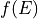, we write the grouped data using fudge’s
flatinterpolation scheme. We note that we could write this scheme as an expansion over basis functions: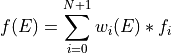
where the weight functions 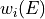 are
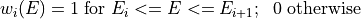
These weights are an orthogonal (but not orthonormal) basis, with
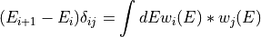
So, to transform from basis to 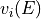 (which has group boundaries
![[ E'_0, ... ]](../_images/math/1e19278a2004fb1dd9c4bcd8f9dd4dda4824eab2.png) ), do:
), do: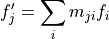
where 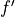 is the regrouped function coefficients and 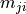 is the matrix
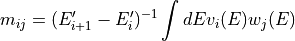
Applying regrouping theory to covariance matrices
When we are given a covariance matrix 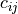 in ENDF, it is meant to be interpreted as a grouped covariance in both the direction of the matrix rows and the matrix columns. Therefore, we must regroup in both the row direction and the column direction. The ENDF format gives both the group boundaries for the rows and columns. In other words, ENDF gives us the following rule for evaluating the continuous row- column covariance:
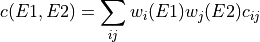
Computing 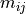 as before,
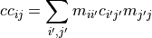
It is straightforward to generalize to the case where the row and column bases are different.
In the routine below, we abuse
xData.XYs1dto specify the functions and use theXYs1d.groupOneFunction()method to perform the integrals to get the regrouping matrix. We do this separately for the rows and the columns. The matrix multiplication that converts a covariance from one pair of bases (group structures) to another is accomplished using numpy.An explanation of fudge’s ‘flat’ interpolation
Suppose we have a function specified using fudge’s ‘flat’ interpolation. Then we have
 entries 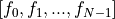 and a set of group
boundaries 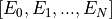 and the following rule for interpolation:
entries 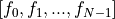 and a set of group
boundaries 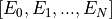 and the following rule for interpolation:Below
 , evaluates to 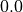
, evaluates to 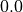From 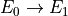, evaluates to 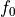
From 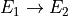, evaluates to 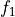
…
From 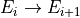, evaluates to

…
From 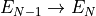, evaluates to 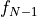
Above 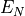, evaluates to
- isSymmetric()[source]¶
Simple test to determine if an underlying matrix is symmetric :return: boolean
- keyName = 'label'¶
- property label¶
- matrix¶
a
xData.gridded.Gridded2dinstance containing the matrix
- moniker = 'covarianceMatrix'¶
- classmethod parseNodeUsingClass(element, xPath, linkData, **kwargs)[source]¶
Translate <covarianceMatrix> element from xml into python class.
- plot(title=None, scalelabel=None, xlim=None, ylim=None, xlog=False, ylog=False)[source]¶
- Parameters:
title –
scalelabel –
xlim –
ylim –
xlog –
ylog –
- Returns:
- property productFrame¶
- rowBounds(unit=None)[source]¶
Get the bounds of the row. If unit is specified, return the bounds in that unit.
- toAbsolute(rowData=None, colData=None)[source]¶
Rescales self (if it is a relative covariance) using XYs1d rowData and colData to convert self into an absolute covariance matrix.
- Parameters:
rowData – an XYs1d instance containing data to rescale covariance in the “row direction” if it isn’t given, we’ll compute it from the corresponding data in the reactionSuite
colData – an XYs1d instance containing data to rescale covariance in the “col direction” if it isn’t given, we’ll compute it from the corresponding data in the reactionSuite
- Returns:
a copy of self, but rescaled and with the type set to absolute
- toCovarianceMatrix()[source]¶
Return copy of self (for consistency with toCovarianceMatrix behavior in summed.py / mixed.py) :return:
- toRelative(rowData=None, colData=None)[source]¶
Rescales self (if it is a absolute covariance) using XYs1d rowData and colData to convert self into a relative covariance matrix.
- Parameters:
rowData – an XYs1d instance containing data to rescale covariance in the “row direction” if it isn’t given, we’ll compute it from the corresponding data in the reactionSuite
colData – an XYs1d instance containing data to rescale covariance in the “col direction” if it isn’t given, we’ll compute it from the corresponding data in the reactionSuite
Note
If the column axis is a link, only rowData is needed. If neither rowData nor colData are specified, you’d better hope that the covariance is already relative because this will throw an error.
- Returns:
a copy of self, but rescaled and with the type set to relative
- property type¶
fudge.covariances.summed module¶
- class fudge.covariances.summed.Summand(link=None, root=None, path=None, label=None, relative=False, ENDF_MFMT=None, coefficient=None)[source]¶
Bases:
LinkStores one summand in the summed covariance. Consists of a link, an ENDF MF/MT and a coefficient
- moniker = 'summand'¶
- class fudge.covariances.summed.SummedCovariance(label, domainMin, domainMax, domainUnit='eV', summands=None)[source]¶
Bases:
AncestryIO,CovarianceCovariance matrix stored as sum/difference of matrices from other reactions, valid over a specified domain. Note: summed matrices may sum over other summed matrices, which opens up the possibility of a recursively-defined covariance. Recursion is avoided so long as the domains don’t overlap.
Each summand has a coefficient ‘c’ that scales the associated covariance when summing together:
$$sum_{0}^{N} c * Cov * c.T$$
In current data libraries the coefficients are always +/-1.
- columnBounds(unit=None)[source]¶
Get the bounds of the column. If unit is specified, return the bounds in that unit.
- property domainMax¶
- property domainMin¶
- property domainUnit¶
- getReferredCovariance(pointer)[source]¶
FIXME what’s this for? It’s not used anywhere in FUDGE… should it be removed?
- Parameters:
pointer –
- Returns:
- getUncertaintyVector(theData=None, relative=True)[source]¶
Combine all subsections into single uncertainty vector, converting to relative if requested.
- Returns:
an XYs1d instance
- keyName = 'label'¶
- property label¶
- moniker = 'sum'¶
- classmethod parseNodeUsingClass(element, xPath, linkData, **kwargs)[source]¶
This method must be overrwritten by the derived class.
- rowBounds(unit=None)[source]¶
Get the bounds of the row. If unit is specified, return the bounds in that unit.
- toAbsolute(rowData=None, colData=None)[source]¶
Rescales self (if it is a relative covariance) using XYs1d rowData and columnData to convert self into an absolute covariance matrix.
- Parameters:
rowData – an XYs1d instance containing data to rescale covariance in the “row direction”
colData – an XYs1d instance containing data to rescale covariance in the “column direction”
Note
If the column axis is set to ‘mirrorOtherAxis’, only rowData is needed.
- Returns:
a copy of self, but rescaled and with the type set to absolute
- toCovarianceMatrix(label='composed')[source]¶
Sum the parts to construct the covariance matrix on the domain of self. Note: each part must be converted to absolute before summing, since the sum is over different reactions.
- Parameters:
label – label attached to the new CovarianceMatrix
- Returns:
CovarianceMatrix instance, on the union grid of all summands over the domain of self.
- toRelative(rowData=None, colData=None)[source]¶
Rescales self (if it is a absolute covariance) using XYs1d rowData and columnData to convert self into a relative covariance matrix.
- Parameters:
rowData – an XYs1d instance containing data to rescale covariance in the “row direction”
colData – an XYs1d instance containing data to rescale covariance in the “column direction”
Note
If the column axis is a link to row axis, only rowData is needed.
- Returns:
a copy of self, but rescaled and with the type set to relative